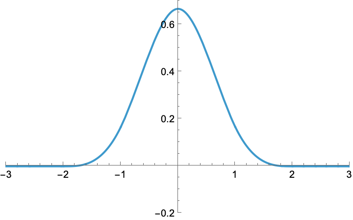
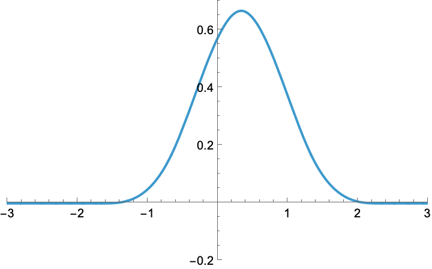
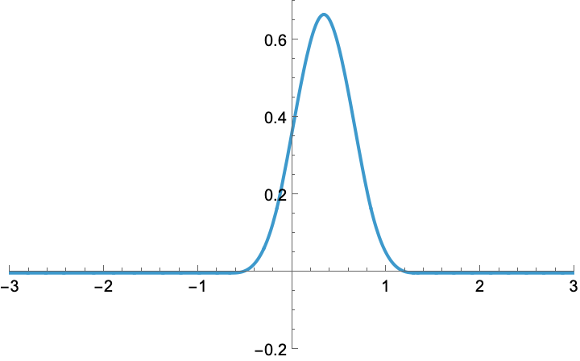
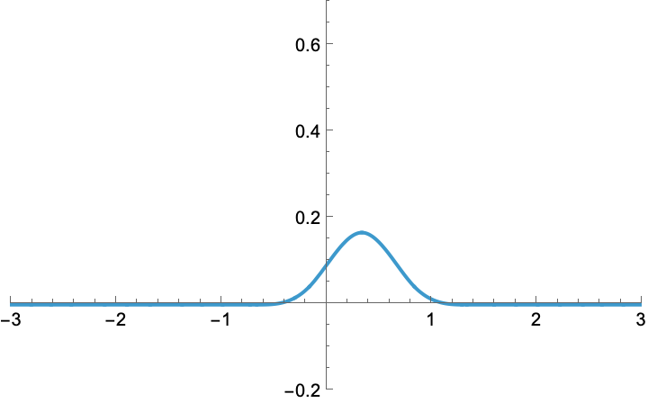
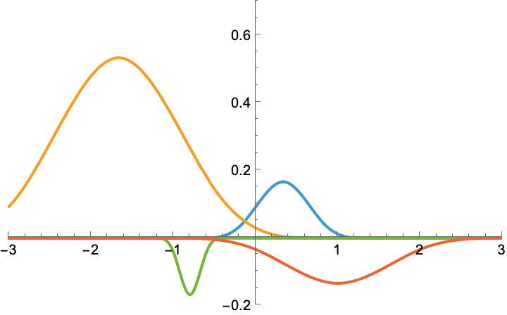
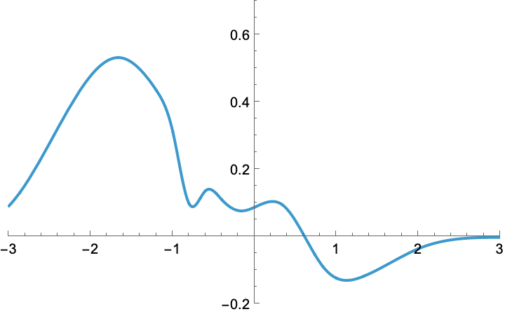
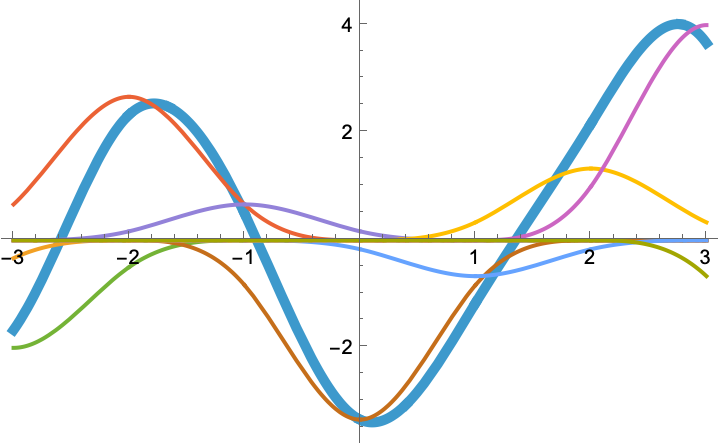
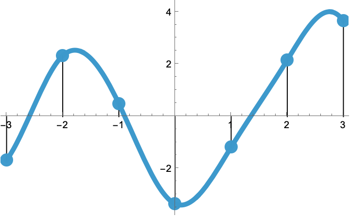
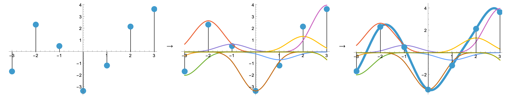

Spline Interpolation#
Spline Processing#
Splines are \(d\)-dimensional real functions \({\mathbb{R}}^{d}\rightarrow{\mathbb{R}}\) that are continuously defined while being parameterized by discrete data \({\mathbb{Z}}^{d}\rightarrow{\mathbb{R}}\). This gives access to many interesting operations that would otherwise be illegitimate with discrete data since these operations are truly valid in the continuum only, for instance:
differentiation—gradients are often relied upon to detect edges in images, or to minimize some cost function, or in the handling of the differential equations of physical models;
arbitrary geometric transformations—the spline can be evaluated at any desired coordinate;
specific geometric transformations such as resizing—the aliasing inherent with the downsizing of data can be handled much more safely in the continuous domain than it can with the discrete data.
There are many brands of splines. In the graphics world, one often relies on splines to represent curves, for instance with nonuniform rational B-splines. The SplineOps library is not meant to be used for such applications; in return, it is well-suited to the handling of data defined on a uniform grid and offers highly successful tradeoffs between quality of representation and computational efficiency [1], [2], [3], [4], [5].
Pros
Bridge between the discrete world and the continuous world.
Tunable tradeoff between speed and quality.
Efficient continuously defined representation of uniform data in multiple dimensions.
Cons
The spline may overshoot/undershoot the data samples.
In 1D, the spline may not be monotonous in regions where the data samples are.
The spline is nonlocal, by which we mean that the update of just one data sample still requires the update of the whole spline.
B-Splines#
Here is the plot of a B-spline.
{kind=link}

A B-spline is a member of a family of real functions that are indexed by their degree (e.g., linear, quadratic, cubic, quartic, quintic). For instance, the degree above is three.
Now, let us shift this B-spline horizontally by one third.
{kind=link}

Moreover, let us shrink it by 60%.
{kind=link}

Finally, let us multiply it by one fourth. This multiplicative step is called a weighting of the B-spline.
{kind=link}

Likewise, we could play with any other combination of (shift, shrink, weight) to obtain a zoo of other functions, including some with negative weight. In the present case, all of them would be said to be cubic B-splines, up to their individual (shift, shrink, weight). Here are some.
{kind=link}

Splines#
Now, we are going to do something bold. Let us sum these functions together.
{kind=link}

We were able to create some combined function that seems to be kind of arbitrary. This combined function somehow retains the characteristics of B-splines, but it is no more a B-spline (the letter B stands for Basis); instead it is called a spline (without the B).
Spline Interpolation#
We are going to use splines to interpolate data, which is an operation whose purpose is to build a continuously defined function out of arbitrary discrete samples, in such a way that the samples of the built function are identical to the provided ones. To make our life simple, from now on we are going to consider only integer-valued shifts (the spline is then said to be a regular spline). Also, we are not going to either shrink or expand B-splines anymore, nor are we ever going to consider splines made of a mix of degrees. Yet, we want to maintain our free choice of the weights of the B-splines; this will give us sufficient freedom to build splines that can be shaped any way we want.
Here is some uniform spline (thick curve), along with its additive constituents (arbitrarily weighted and integer-shifted B-splines of same degree, thin curves).
{kind=link}

We now mark with dots the samples at the integers of this particular spline.
{kind=link}

These samples make for a discrete list of values (i.e., the data samples). Since we want to interpolate these data, a natural question that arises is as follows: is there a way to reverse the process and to first impose a list of arbitrary sample values, then only to determine which B-spline weights are appropriate to build the uniform spline that happens to go through these samples? Here is the succession of operations we have in mind.
{kind=link}

The answer is yes, we can go from discrete samples to continuously defined curve, but one needs to do it right. For instance, the weighting process is not trivial; the center panel of the figure above clearly illustrates the fact that the value of a weight is usually not equal to the value of a sample (for a clear case, do inspect abscissa at 2). The TensorSpline class solves the difficulties for you in an efficient way and in multiple dimensions, for many degrees of splines.